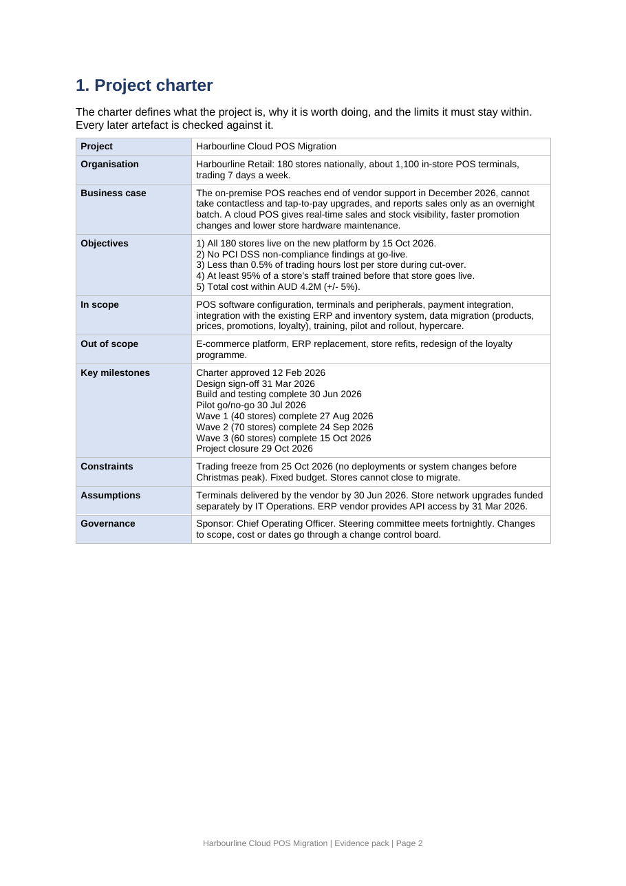
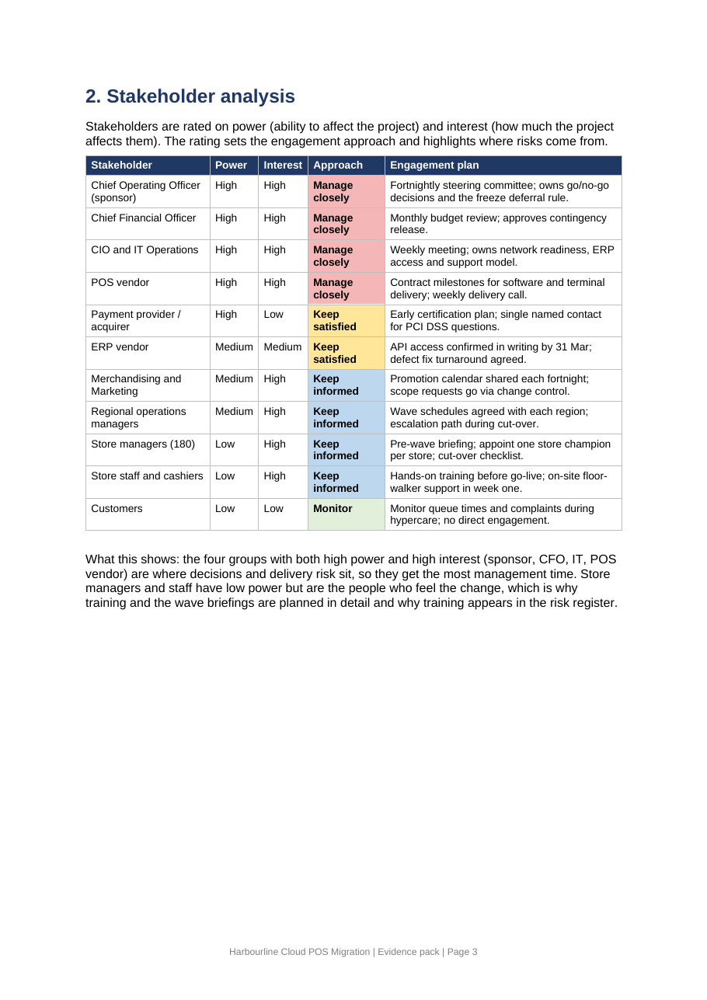
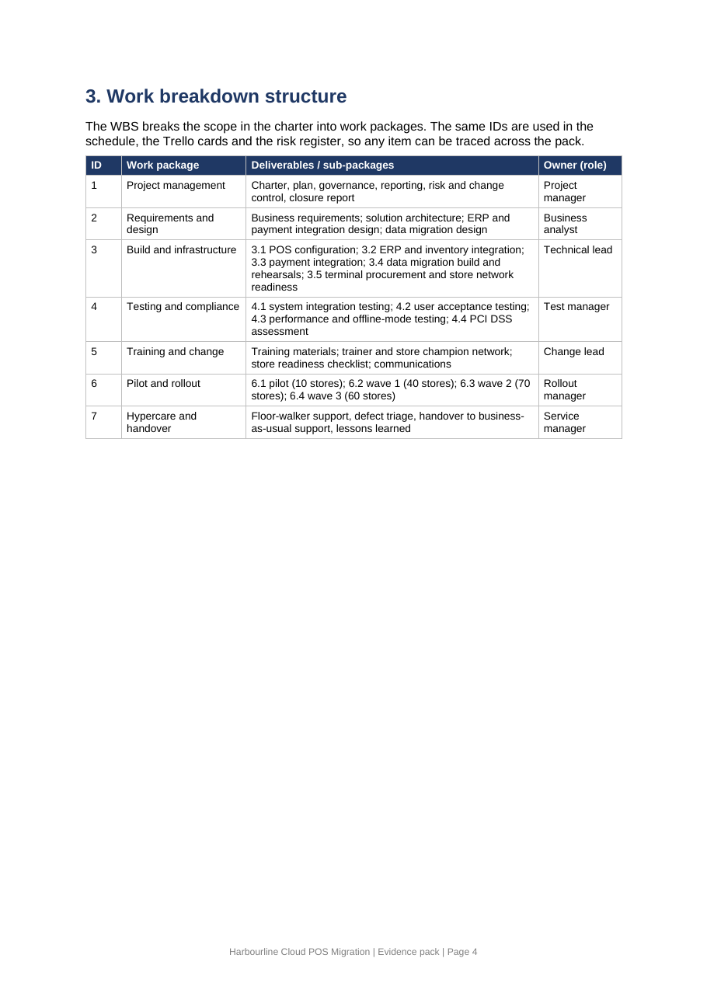
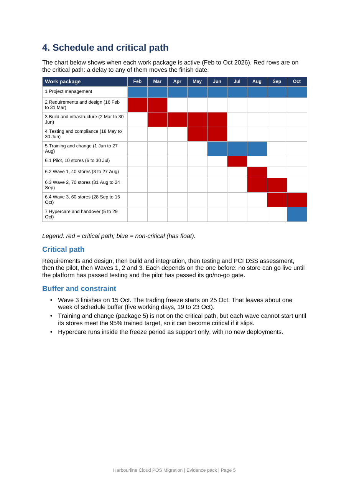
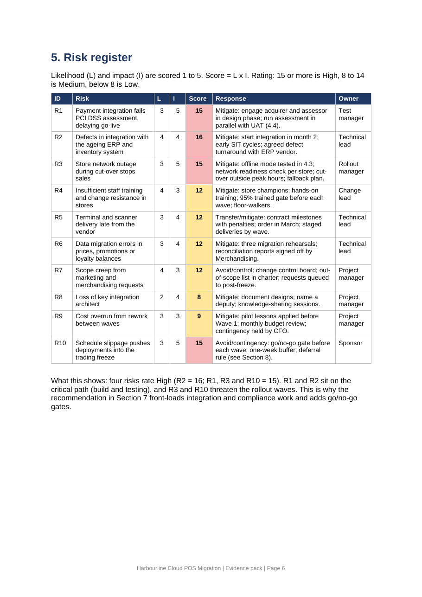
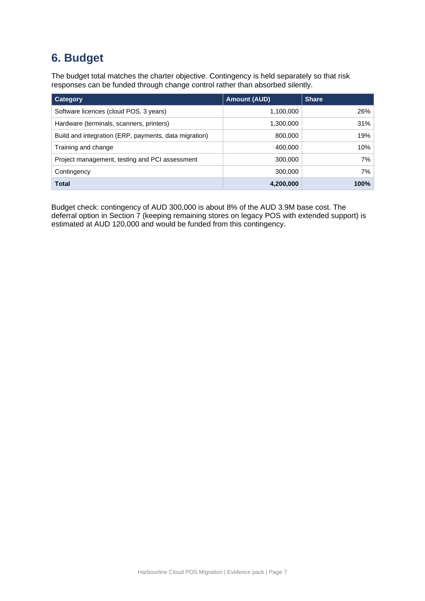
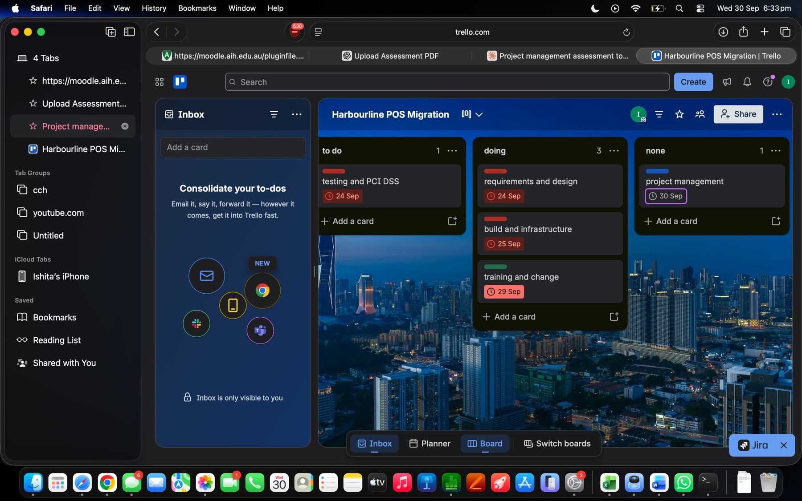
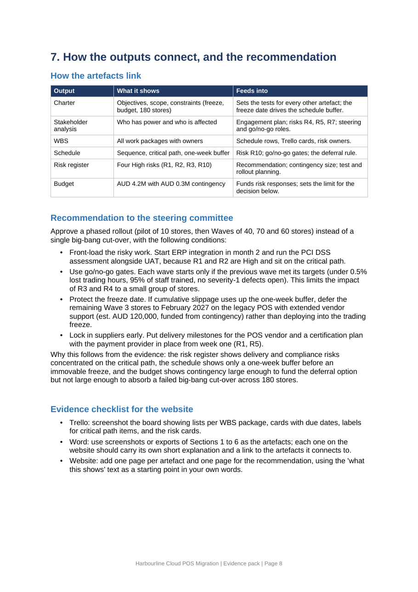

Home
Harbourline Retail is a fictional national chain with 180 stores and about 1,100 POS terminals. Its on-premise point-of-sale system reaches end of vendor support and cannot take newer payment methods. This project moves every store to a cloud-based POS in phases, before the Christmas trading freeze on 25 October 2026. Budget: AUD 4.2M.
Tools used: Microsoft Word for the charter, stakeholder analysis, WBS, schedule, risk register and budget. Trello for the task board.
How the pages fit together: The charter sets the objectives and limits. The stakeholder analysis shows who must be managed. The WBS lists all the work. The schedule puts that work in order and shows the critical path. The risk register shows what could go wrong on that path. The budget shows what can be spent on responses. The recommendation pulls these into decisions for the steering committee. The Trello board is where the work is tracked.
Recommendation in one line: Roll out in phases (pilot of 10 stores, then 40, 70 and 60), with go/no-go gates, early work on the high risks, and a rule to defer the last stores rather than deploy into the freeze.
1. Project charter
What this shows
The charter defines what the project is, why it is worth doing, and its limits: five objectives, scope, milestones, constraints and governance.
- All 180 stores live by 15 October 2026.
- No PCI DSS non-compliance findings at go-live.
- Less than 0.5% of trading hours lost per store during cut-over.
- At least 95% of store staff trained before their store goes live.
- Total cost within AUD 4.2M (plus or minus 5%).
- Constraint: trading freeze from 25 October 2026.
How it connects
Every other artefact is checked against the charter. The freeze date sets the schedule buffer, the objectives set the wave gates, and the budget total comes from here.
Decision it supports
The steering committee approves scope and limits before work starts.


2. Stakeholder analysis
What this shows
Eleven stakeholders rated by power and interest, with an engagement approach for each: manage closely, keep satisfied, keep informed or monitor.
- High power and high interest: the sponsor (COO), the CFO, IT Operations and the POS vendor. They get the most management time.
- Store managers and staff have low power but feel the change most, so training and wave briefings are planned in detail.
- The payment provider has high power and low interest, so it is kept satisfied with an early certification plan.
How it connects
The ratings feed the engagement plan and explain where risks come from: R4 (training), R5 (terminal delivery) and R7 (scope creep) trace to stakeholder groups.
Decision it supports
Who sits on the steering committee and how much time the project manager spends with each group.


3. Work breakdown structure
What this shows
The scope broken into seven work packages with deliverables and an owner: project management, requirements and design, build and infrastructure, testing and compliance, training and change, pilot and rollout, hypercare and handover.
How it connects
The same IDs appear in the schedule, the Trello cards and the risk register, so any item can be traced across the site. Each package has an owner role, so every risk and task has an accountable person.
Decision it supports
Confirms nothing in scope is missing and sets the units the schedule and budget are built on.


4. Schedule and critical path
What this shows
A Gantt-style chart from February to October 2026. Red rows are the critical path: requirements and design, build, testing and compliance, the pilot and the three rollout waves.
- Wave 3 finishes on 15 October. The freeze starts on 25 October, leaving about five working days of buffer (19 to 23 October).
- Training is not on the critical path, but each wave cannot start until its stores are 95% trained, so it can become critical if it slips.
How it connects
The thin buffer before the freeze is why risk R10 (slippage into the freeze) is rated High. The wave order is the reason for the go/no-go gates in the recommendation.
Decision it supports
Whether the plan is safe as it stands. It is not fully safe: one week of buffer needs a deferral rule.


5. Risk register
What this shows
Ten risks scored by likelihood x impact (1 to 5 each), each with a response and an owner. Four are High: R2 ERP integration defects (16), R1 PCI DSS failure (15), R3 store network outage during cut-over (15) and R10 slippage into the trading freeze (15).
How it connects
R1 and R2 sit on the critical path (build and testing). R3 and R10 threaten the rollout waves. Owners come from the WBS, and responses are funded from the contingency in the budget.
Decision it supports
Where to spend management effort first: integration and compliance work go early, and gates protect the rollout.


6. Budget
What this shows
A total of AUD 4.2M: licences 1.1M, hardware 1.3M, build and integration 0.8M, training and change 0.4M, project management, testing and PCI assessment 0.3M, contingency 0.3M.
How it connects
The total matches the charter objective. Contingency of AUD 300,000 is about 8% of base cost. It can fund the deferral option (about AUD 120,000) but not a failed big-bang cut-over across 180 stores.
Decision it supports
How much risk the project can absorb, and who approves release of contingency (the CFO).


7. Trello board
What this shows
The task board in Trello with three lists (to do, doing, done) and cards for the work packages, coloured by label: red for critical path, blue for project management, green for training.
How it connects
Cards are named after the WBS work packages, so the board is a working view of the WBS. Critical path cards match the red rows in the schedule.
Decision it supports
What the team works on next, and what is late or blocked.


8. Recommendation
Recommendation to the steering committee
Approve a phased rollout (pilot of 10 stores, then waves of 40, 70 and 60) instead of a single big-bang cut-over, with these conditions:
- Front-load the risky work. Start ERP integration in month 2 and run the PCI DSS assessment alongside user acceptance testing, because R1 and R2 are High and on the critical path.
- Use go/no-go gates. Each wave starts only if the previous wave had under 0.5% lost trading hours, 95% of staff trained and no severity-1 defects open.
- Protect the freeze date. If slippage uses up the one-week buffer, defer the remaining Wave 3 stores to February 2027 on the legacy POS with extended vendor support (about AUD 120,000, from contingency), instead of deploying into the freeze.
- Lock in suppliers early. Put delivery milestones for the POS vendor and a certification plan with the payment provider in place from week one.
Why the evidence supports this
The risk register shows delivery and compliance risks on the critical path. The schedule shows only one week of buffer before an immovable freeze. The budget has enough contingency for the deferral option but not for a failed big-bang cut-over.

